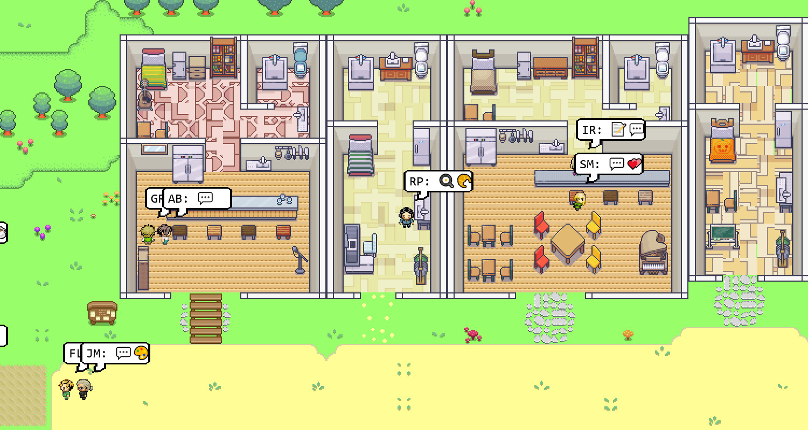
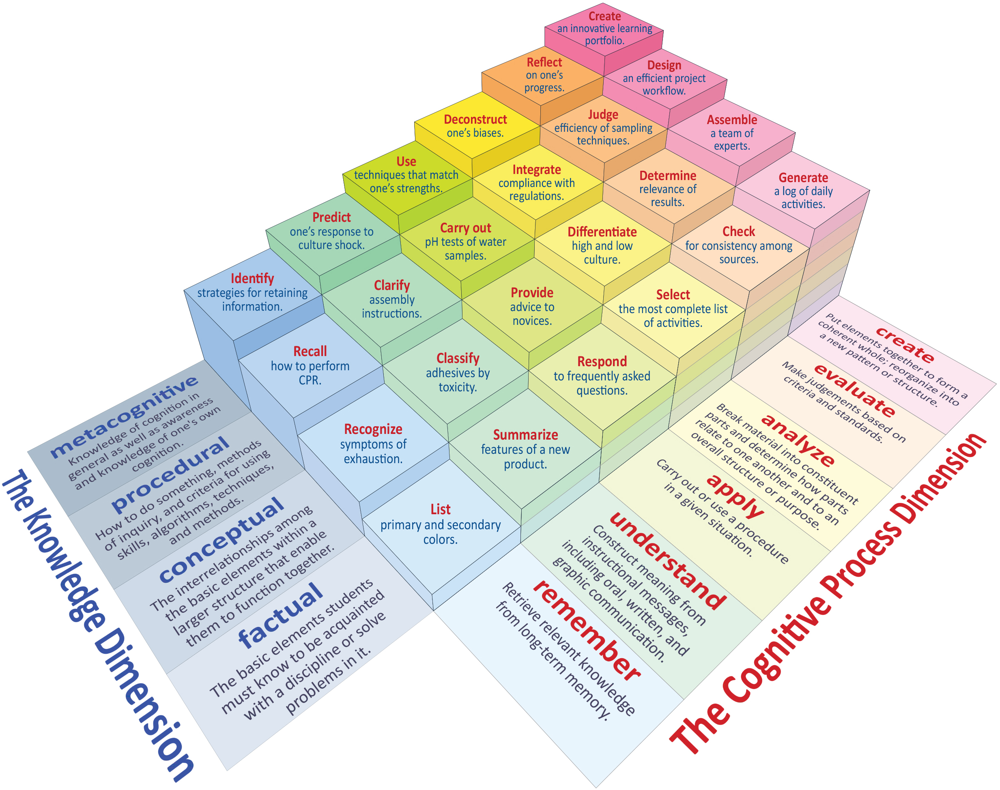
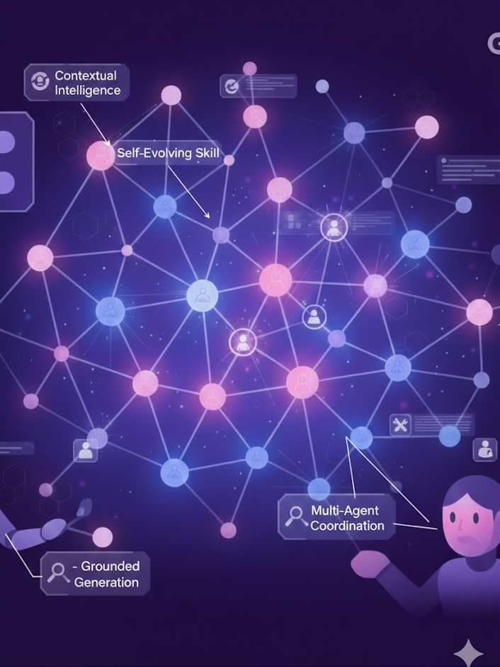

About me
I'm Keqian Li, and I am a Professor at ECNU . I obtained my Ph.D. at the School of Engineering, University of California Santa Barbara under the Regent Scholarship, advised by Prof. Xifeng Yan (Chair), Prof. William Wang and Prof. Ambuj Singh, and Bachelor of Engineering the Special Pilot CS Class (Yao Class) supervised by Andrew Yao, and Bachelor of Economics from Tsinghua University School at Economic and Management at Tsinghua University. Before ECNU, I worked full-time in the industry and has been affiliated with XPeng, Meta, Google, Facebook, MSR, Yahoo! Labs, AOL and Verizon.
What's New
- 12/2025: Excited to join Shanghai Insitute of AI for Education affiliated with ECNU and contribute to the next generation of AI research and engineering for social good.
- 11/2025: We released the IRON, a humanoid robot suspected and later bunked as a human actor . [Press]
- 08/2025: Excited to join XPeng embodied intelligence team as the organization lead. I will be responsible for the end to end development of the multimodal foundation model that empowers the embodied intelligence across XPeng humanoid production.
- 06/2025: The llama4 herd of model is featured in CVPR 2025 Keynote: The 🦙 Herd of Models:System 1, 2, 3 Go!
- 03/2025: We introduced Llama 4 Scout and Llama 4 Maverick with native multimodal AI and efficient mixture of expert architecture from scratch
- 06/2024: We released Llama3.3, a 70B sized model achieving 405B level intelligence available on huggingface for your day to day use.
- 06/2024: We open sourced Llama3.1 405B, world's largest and most capable openly available foundation model. More details are in the technical report The Llama 3 Herd of Models . Happy to chat more on your use cases!
- 02/2024: We released Llama3, a series of pretrained and instruction-fine-tuned language models with 8B and 70B parameters that can support a broad range of use cases.
- 02/2024: We Meta's generative AI platform for monetization . Factuality and faithfulness is critical to the adoption of generative AI and addressed to a great extent.
- 07/2023: We launched Meta's next generation ads platform where unified user understanding intelligence serves as one of the most powerful features.
- 02/2023: Hiring globally AI Research interns to work broadly in the area of pretraining.
- 07/2022: Exicited to join Facebook AI as a research scientist, working on large scale representation learning.
- 04/2021: We launched the next generation content recommendation model across Verizon family of products that improved quantitative accuracy by up to 50%. More technical details can be find in Google patents .
Research

Modeling and optimizing social and platform-based systems is central to AI for Social Science. This research direction focuses on understanding organizational behavior, supply–demand matching, and dynamic revenue optimization in real-world environments. By integrating mechanism design, behavioral modeling, and large-scale data analytics, we aim to build intelligent decision systems that improve efficiency, coordination, and long-term platform sustainability.
Keqian Li, Wei Lu, Smriti Bhagat, Laks V. S. Lakshmanan, Cong Yu. "On Social Event Organization." Proceedings of the 20th ACM SIGKDD International Conference on Knowledge Discovery & Data Mining. [Publication]
Wei Lu, Shanshan Chen, Keqian Li, Laks V. S. Lakshmanan. "Show Me the Money: Dynamic Recommendations for Revenue Maximization." Proceedings of the VLDB Endowment, 7(14). [Publication]

Understanding and organizing knowledge structures is fundamental to building machine-interpretable cognitive systems. This research direction focuses on extracting concepts, hierarchies, and semantic relations from scientific literature, technical documents, and structured data such as tables. By constructing computable knowledge representations—ranging from concept embeddings to hierarchical ontologies and roadmap models—we aim to transform fragmented information into structured cognitive systems that support discovery, reasoning, and long-term knowledge evolution.
Mining and Analyzing Technical Knowledge Based on Concepts. PhD Thesis, University of California, Santa Barbara. [Publication]
Concept Mining via Embedding. IEEE International Conference on Data Mining 2018. [Publication]
Unsupervised Neural Categorization for Scientific Publications. SIAM International Conference on Data Mining 2018. [Publication]
Best Paper Candidate. Hiercon: Hierarchical Organization of Technical Documents Based on Concepts. IEEE International Conference on Data Mining 2019. [Publication]
Mining Algorithm Roadmap in Scientific Publications. ACM SIGKDD International Conference on Knowledge Discovery & Data Mining. [Publication]
FTS: Faceted Taxonomy Construction and Search for Scientific Publications. ACM SIGKDD International Conference on Knowledge Discovery & Data Mining. [Publication]
PoQaa: Text Mining and Knowledge Sharing for Scientific Publications. ACM SIGKDD International Conference on Knowledge Discovery & Data Mining (Demo). [Publication]
Discovering Enterprise Concepts Using Spreadsheet Tables. ACM SIGKDD International Conference on Knowledge Discovery & Data Mining. [Publication]

Building robust and interpretable intelligent systems requires moving beyond flat vector representations. This research direction explores how to explicitly model hierarchical structure, conceptual normalization, and heterogeneous expert components within representation learning frameworks. By integrating knowledge augmentation, multi-grained semantic modeling, and large-scale distributed systems, we aim to enhance robustness, generalization, and interpretability in real-world AI applications.
TNT: Text Normalization Based Pre-training of Transformers for Content Moderation. Proceedings of the Conference on Empirical Methods in Natural Language Processing 2020. [Publication]
MGEL: Multigrained Representation Analysis and Ensemble Learning for Text Moderation. IEEE Transactions on Neural Networks and Learning Systems. [Publication]
CALM: Common-Sense Knowledge Augmentation for Document Image Understanding. Proceedings of the 30th ACM International Conference on Multimedia. [Publication]
Hadoop-MTA: A System for Multi Data-Center Trillion Concepts Auto-ML Atop Hadoop. IEEE International Conference on Big Data 2021. [Publication]
BAN: Large Scale Brand Anonymization for Creative Recommendation via Label Light Adaptation. IEEE International Conference on Big Data 2021. Techpulse 2021 Best Internal Talk Award. [Publication]
Building robust and interpretable intelligent systems requires moving beyond flat vector representations. This research direction explores how to explicitly model hierarchical structure, conceptual normalization, and heterogeneous expert components within representation learning frameworks. By integrating knowledge augmentation, multi-grained semantic modeling, and large-scale distributed systems, we aim to enhance robustness, generalization, and interpretability in real-world AI applications.
The Llama 4 Herd: The Beginning of a New Era of Natively Multimodal AI. Keqian Li and other contributors. CVPR Keynote Speech. May 2025.
The Llama 3 Herd of Models. Keqian Li and other contributors. Technical Report. July 2024.
SuperCone: Modeling Heterogeneous Experts with Concept Meta-learning for Unified Predictive Segments System. Computing Research Repository. [Publication]
US827,364: System and Method for Integrated Large Scale Audience Targeting via Augmented Heterogeneous Sub Systems. Keqian Li, Yifan Hu (Patent Filed). May 2022.
US827,400: System and Method for Augmenting Existing Experts for Enhanced Predictions. Keqian Li, Yifan Hu (Patent Filed). May 2022.
US827,431: System and Method for Integrating Multiple Expert Predictions in a Nonlinear Framework via Learning. Keqian Li, Yifan Hu (Patent Filed).
Patents
-
System and method for text moderation via pretrained transformers
US Patent Granted US11,481,543 -
Determining a hierarchical concept tree using a large corpus of table values
US Patent Granted US10,789,229 -
System And Method For Integrated Large Scale Audience Targeting Via Augmented Heterogeneous Sub Systems
US Patent Filed US827,364 -
System And Method For Augmenting Existing Experts For Enhanced Predictions
US Patent Filed US827,400 -
System And Method For Integrating Multiple Expert Predictions In A Nonlinear Framework Via Learning
US Patent Filed US827,431
Services
- Associate Editor/Reviewer : IEEE Transactions on Knowledge and Data Engineering, IEEE Transactions on Computational Social Systems , Journal of Shanghai Jiao Tong University, SIGKDD International Conference on Knowledge Discovery & Data Mining, Conference on Neural Information Processing Systems, ACM Multimedia
Contact Me
Email: keqianli [at] meta.com
Address: 1 Hacker Way, Menlo Park, CA, 94025